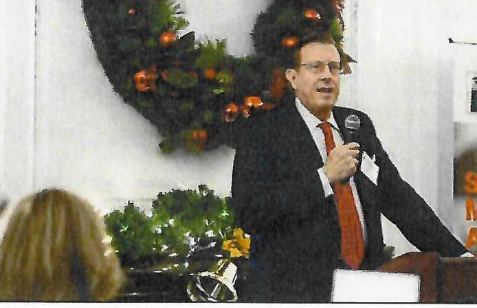

Longtime Rye homeowner. Raised two sons through Rye public schools. Married 37 years to Diana, member of Screen Actors Guild. Homeowner near Rye Town Park. Native to NYC and Westchester.
Leading Municipal Finance Expert: Legendary 47-year career in Public Finance on Wall Street. Nationally known in municipal bond market; author in the leading textbook. Managed credit approvals for municipal loans and banking at one of the world's largest banks. Managed departments of professionals, including as head of top Municipal Credit Research team at largest Wall Street brokerage and investment banking firm.
Unprecedented Amount of Awards as a Municipal Bond analyst:
Foremost National Expert on Housing and Real Estate Debt: Testified numerous times before U.S. Congress and Senate. Appointed by National Housing Advisory Panel by NY Senator D'Amato. Groundbreaking research changed market practices. Contributing Author to Frank Fabozzi's Handbook of Municipal Bonds.
Widely Recognized Public Speaker and Media Commentator on municipal bonds. Extensive press portfolio and published research. Regular conference organizer and chairman. LinkedIn Champion.
Professional Organizations & Public Service: Volunteer at Resurrection Church in Rye. Member and donor for Rye Historical Society, Jay Estate, POTS, Save the Sound, Friends of Read Wildlife, and more. Past Board Member & Treasurer of Municipal Forum of New York. Member and past Chairman of Municipal Analysts Group of New York. Member of the National Federation of Municipal Analysts and former Board Member.
Media Appearances: Bloomberg News (TV and radio), CNN, Wall Street Journal, New York Times, Forbes, NY Post, Daily News, Investment Dealer's Digest, Money, Dow Jones, The Bond Buyer, Research & Ratings Review, Mortgage Banking, Municipal Finance Journal, Public Finance Journal, Market Chronicle, Securities Week, Municipal Bond Portfolio Management, Credit Market Watch and more.
Education: MBA in Finance, SUNY Albany (1980), Full Scholarship. B.A. from SUNYA. Regents Scholarship recipient. Certified Financial Analyst (CFA) since 1993.